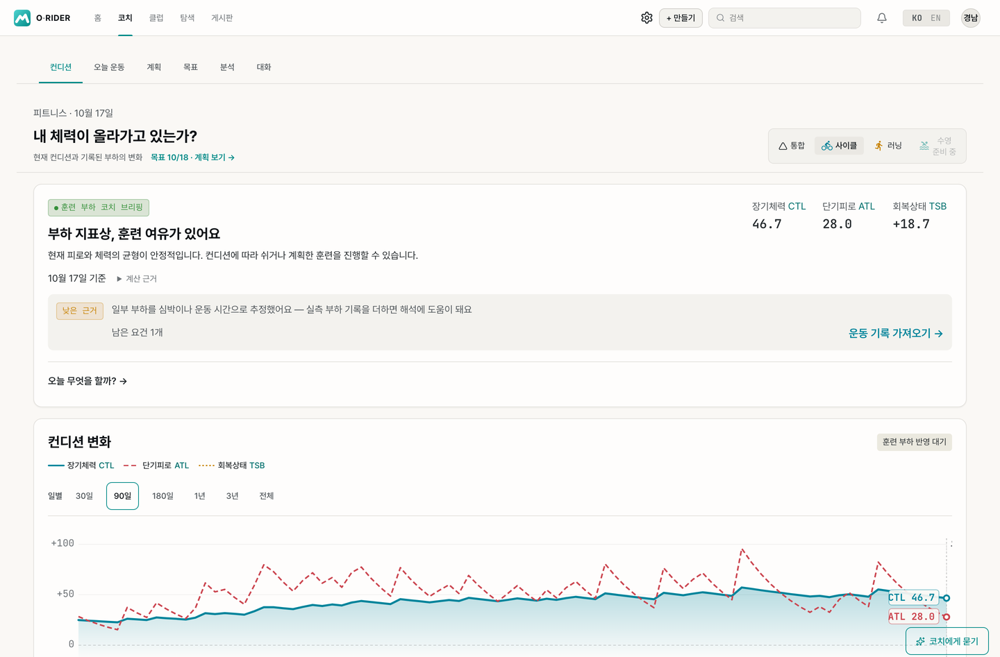
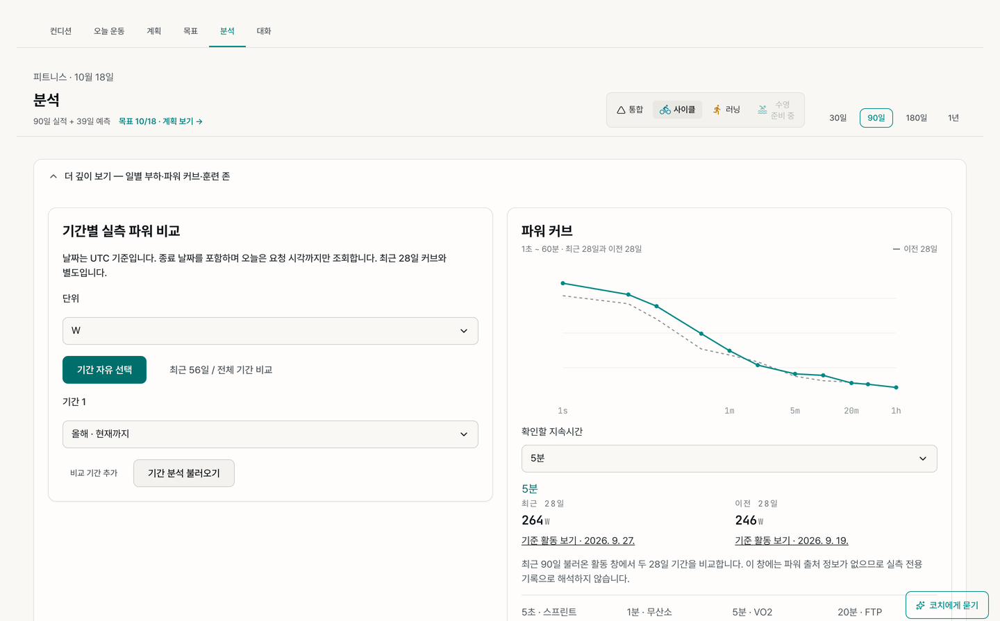
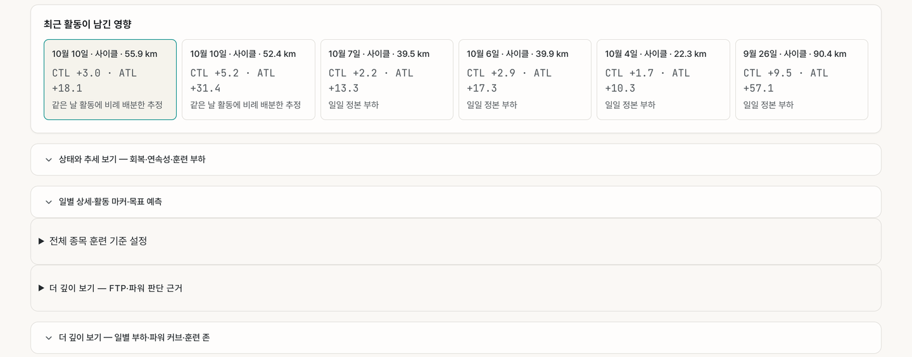

6. 훈련 상태·체력 — 코치 > 훈련 상태·분석
이 장에서 할 수 있는 것
- 코치 > 훈련 상태에서 "지금 체력이 오르는지, 쉬어야 하는지"를 장기체력 CTL · 단기피로 ATL · 회복상태 TSB로 읽습니다.
- 코치 > 분석에서 파워 커브와 라이더 능력 3축을 봅니다.
- "가정값" · "낮은 근거" · "데이터 부족" 표시의 뜻을 알고, 훈련 기준값(FTP · 임계 페이스 등)을 바로잡습니다.
6.1 훈련 상태 읽기 — 오늘은 훈련해도 될까

따라 하기
- 위쪽 메뉴 코치 > 훈련 상태 탭을 엽니다. 제목은 "내 체력이 올라가고 있는가?"입니다.
- 오른쪽 위 칩에서 통합 · 사이클 · 러닝 중 하나를 고릅니다. 통합은 종목을 합친 값입니다.
- 훈련 부하 코치 브리핑 카드의 한 줄 결론을 먼저 읽습니다.
- 오른쪽 세 숫자(장기체력 CTL · 단기피로 ATL · 회복상태 TSB)를 봅니다.
- 결론 아래 오늘 무엇을 할까? →를 누르면 코치 > 오늘 운동으로 갑니다(7.2).
세 숫자 읽는 법
| 숫자 | 쉬운 뜻 | 읽는 법 |
|---|---|---|
| 장기체력 CTL | 최근 약 6주 동안 쌓인 훈련량 | 천천히 오르면 체력이 쌓이는 중입니다. |
| 단기피로 ATL | 최근 약 1주의 훈련량 | 최근에 세게 했으면 빠르게 오릅니다. |
| 회복상태 TSB | CTL − ATL | 음수면 피로가 쌓인 상태, 양수면 회복된 상태입니다. |
브리핑 결론은 세 가지입니다
| 결론 | 뜻 |
|---|---|
| "부하 지표상, 오늘은 회복을 흡수하는 날" | 피로가 체력보다 빠르게 쌓였습니다. 쉬거나 아주 편하게 움직이세요. |
| "부하 지표상, 가볍게 연결하면 좋은 날" | 자극은 충분합니다. 편한 운동으로 리듬만 이어 가세요. |
| "부하 지표상, 훈련 여유가 있어요" | 피로와 체력의 균형이 안정적입니다. 계획한 훈련을 해도 됩니다. |
6.2 훈련 부하 변화 차트 — 추이 보기
- 코치 > 훈련 상태에서 아래로 내려 훈련 부하 변화 차트를 봅니다. 차트 아래 장기 추이 · 연도별 비교와 선택 구간으로 볼 기간을 바꿉니다.
- 일별 · 30일 · 90일 · 180일 · 1년 · 3년 · 전체 중 기간을 고릅니다.
- 실선(장기체력 CTL), 빨간 점선(단기피로 ATL), 노란 점선(회복상태 TSB)을 봅니다.
| CTL 모양 | 뜻 | 할 일 |
|---|---|---|
| 천천히 오름 | 체력이 쌓이는 중 | 지금 훈련량 유지, 회복 챙기기 |
| 평평함 | 같은 자극에 익숙해짐 | 강도나 양을 조금 바꿔 보기 |
| 가파르게 오름 | 과훈련 위험 | 회복 주간 넣기 |
| 내려감 | 쉬는 중이거나 훈련이 줄었음 | 계획한 휴식인지 확인 |
그 아래에는 다음 영역이 차례로 있습니다. 대부분 접혀 있으니 필요한 것만 눌러 펼치세요.
| 영역 (화면 이름) | 보이는 것 |
|---|---|
| 계획·안전 근거 확인 | 오늘 결론과 계획 조정에 쓴 근거 |
| 최근 활동이 남긴 영향 | 활동마다 CTL·ATL을 얼마나 올렸는지. "일일 정본 부하"는 그날 확정된 부하로 계산했다는 뜻, "같은 날 활동에 비례 배분한 추정"은 하루 합계를 활동별로 나눠 추정했다는 뜻입니다. |
| 상태와 추세 보기 — 회복·연속성·훈련 부하 | 회복 상태와 꾸준함, 부하 흐름 |
| 일별 상세·활동 마커·목표 예측 | 날짜별 숫자, 활동 표시, 목표일까지의 예측 |
| 전체 종목 훈련 기준 설정 | FTP·임계 페이스 등 기준값 입력(6.5) |
| 더 깊이 보기 — FTP·파워 판단 근거 | 현재 FTP와 자동 추정 후보(사이클) |
| 더 깊이 보기 — 일별 부하·파워 커브·훈련 존 | 코치 > 분석과 같은 깊은 차트(6.3) |
6.3 파워 커브 — 나는 어떤 라이더인가

따라 하기
- 코치 > 분석 탭을 열고 칩에서 사이클을 고릅니다. 오른쪽 위에서 30일 · 90일 · 180일 · 1년 중 기간을 고릅니다.
- 더 깊이 보기 — 일별 부하·파워 커브·훈련 존을 펼칩니다.
- 파워 커브에서 최근 28일(실선)과 이전 28일(점선)을 비교합니다.
- 확인할 지속시간(예: 5분)을 고르면 두 기간의 최고 파워와 그 기록을 낸 활동(기준 활동 보기)이 나옵니다.
파워 커브 읽는 법
가로축은 시간(1초 ~ 1시간), 세로축은 그 시간 동안 낼 수 있었던 최고 평균 파워(W)입니다. 이 곡선을 PDC(파워-지속시간 곡선)라고 부릅니다.
| 구간 | 재는 것 | 높으면 |
|---|---|---|
| 5초 · 스프린트 | 순간 폭발력 | 막판 스프린트, 짧은 언덕 돌파에 강함 |
| 1분 · 무산소 | 짧고 강한 힘 | 급가속, 짧은 오르막에 강함 |
| 5분 · VO2 | 최대 산소 능력 부근의 힘 | 중간 길이 오르막에 강함 |
| 20분 · FTP | 오래 버티는 힘 | 긴 오르막, 장거리에 강함 |
라이더 능력 3축
파워 기록이 충분하면 코치 > 분석에 최근 90일 PDC로 계산한 세 가지 능력이 따로 나옵니다. 근거가 모자라면 이 카드 대신 데이터 충분도 안내가 나옵니다(6.4).
| 능력 축 | 쓰는 구간 | 뜻 |
|---|---|---|
| 단시간 파워 역량 | 5초 · 1분 | 순간 스프린트와 짧은 무산소 힘 |
| 유산소 역량 | 5분 | VO2max 부근의 중간 지속 힘 |
| 지속 지구력 | 20분 | 역치 부근의 오래 버티는 힘 |
각 축은 그 구간의 실측 최고 파워(W), 체중 대비 파워(W/kg), 백분위 근거를 함께 보여 줍니다. 세 축을 하나의 점수로 합치지 않으며, 근거가 없는 축은 0점으로 채우지 않고 미산출로 둡니다. 프로필 FTP나 체중이 없으면 W/kg도 미산출입니다.
신뢰도 읽기
신뢰도는 두 가지로 정합니다. 그 축에 필요한 구간 기록이 실제로 몇 개 있는지, 그리고 최근 90일 파워 활동 수가 충분한지입니다. 두 가지가 다 충분하면 높음, 절반쯤이면 보통, 일부만 있으면 낮음, 근거가 없으면 없음입니다. 신뢰도가 낮으면 점수보다 "근거 부족" 표시를 먼저 믿으세요.
6.4 데이터 충분도 · 가정값 — 숫자를 얼마나 믿을까
오라이더는 계산에 필요한 기록이 모자라거나, 내가 정하지 않은 값으로 계산했을 때 숫자 옆에 표시를 붙입니다. 숫자를 지어내 채우지 않고 "왜 비었는지"와 "무엇을 하면 채워지는지"를 함께 보여 줍니다.
| 표시 | 뜻 | 할 일 |
|---|---|---|
| 가정값 | 내가 입력하지 않은 기준값(예: 체중, FTP)을 기본값으로 넣어 계산했습니다. 예: "체중을 기본값으로 계산했어요" | 훈련 기준 설정에서 내 값을 넣거나 내 체중 확인 · 이 기준값 확인을 누릅니다. |
| 가정값 시작값 | 계획·목표의 시작점을 가정값으로 잡았습니다. | 기준값 입력·확인으로 실제 값을 넣습니다. |
| 낮은 근거 | 계산은 했지만 근거가 약합니다. 예: 일부 부하를 심박이나 운동 시간으로 추정했어요. | 실측 기록(파워미터 등)을 더하면 정확해집니다. |
| 데이터 부족 | 계산에 필요한 최소 기록이 아직 없습니다. | 카드에 적힌 남은 요건을 채웁니다. |
| 근거 부족 · 미산출 | 그 항목만 계산하지 않았습니다. 0점이 아닙니다. | 필요한 구간 기록이 쌓이면 나옵니다. |
남은 요건 읽기
잠긴 기능 카드에는 "남은 요건 1개", "계산에 필요한 조건이 N개 남았어요"처럼 남은 조건이 나옵니다. 요건 모두 보기를 누르면 하나씩 볼 수 있습니다.
| 요건 예시 (화면 문구) | 채우는 방법 |
|---|---|
| "실측 파워 기록 — 최소 N개부터 계산을 시도해요 · 지금 N개" | 파워미터로 탄 기록을 가져옵니다(파워 기록 가져오기). |
| "3~20분 최대 노력 구간 — 최소 N개 · 지금 N개" | 다음 라이딩에 5~20분 꾸준한 최대 노력을 넣어 봅니다. |
| "1시간 이상 파워 라이딩 — 최소 N회 · 지금 N회" | 1시간 이상 꾸준히 타는 라이딩을 합니다. |
| "첫 기록 N일째 · N일째부터 폼 해석이 정확해져요" | 지금처럼 기록을 이어 가면 됩니다. |
| "체중을 직접 입력하거나 확인해 주세요" | 체중 입력 · 내 체중 확인 |
6.5 훈련 기준값 설정 — FTP · 임계 페이스 · 심박

따라 하기
- 코치 > 훈련 상태 화면 아래쪽 전체 종목 훈련 기준 설정을 펼칩니다. (옛 설정 > 운동 프로필 주소로 들어와도 이곳이 열립니다.)
- 체격에서 체중(W/kg 계산에 씀)과 신장을 확인합니다.
- 운동 임계치에서 종목별 기준값을 넣습니다 — FTP(W, 사이클), 최대 심박(bpm), LTHR(달리기 임계 심박, bpm), 임계 페이스(mm:ss/km, 러닝), CSS(mm:ss/100m, 수영).
- 심박 존 경계를 확인하고 저장을 누릅니다.
- 필요하면 아래 기기 반영 상태 보기 →로 휴대폰 앱에 값이 들어갔는지 확인합니다.
FTP · 최대 심박은 웹 코치 > 훈련 상태 > 전체 종목 훈련 기준 설정과 앱 설정 > 주행 설정 > 라이더 프로필 어느 쪽에서 바꿔도 서버가 서로 맞춰 줍니다. 체중은 웹 훈련 기준 설정에서 바꾸세요(앱에서는 설정 > 내 자전거 > 가상 파워를 켰을 때 '라이더 체중'으로 보입니다). 가장 나중에 저장한 값이 양쪽에 적용되며, 반영까지 잠시 걸릴 수 있습니다. 분석·존·목표 판정은 웹의 훈련 기준 설정 값을 기준으로 계산하므로, 값이 다르게 보이면 웹 코치 > 훈련 상태에서 확인하세요.
6.6 심박 존 — 강도 나눠 보기
| 존 | 이름 | 목적 |
|---|---|---|
| 존 1 | 회복 | 피로 풀기 |
| 존 2 | 지구력 | 기초 체력 — 장거리의 기본 |
| 존 3 | 템포 | 편하지는 않지만 대화는 가능한 강도 |
| 존 4 | 역치 | FTP 근처 — 실력이 크게 오르는 구간 |
| 존 5 | VO2max | 아주 강함 — 짧은 인터벌에만 |
- 긴 라이딩이 대부분 존 2였다면 목적에 맞게 탄 것입니다.
- 인터벌 날에는 존 4~5 시간이 분명히 있어야 합니다.
- 늘 존 3만 많다면 "조금 힘들지만 효과는 애매한" 강도일 수 있습니다. 쉬운 날은 더 쉽게, 강한 날은 더 강하게 나눠 보세요.
6.7 러닝 훈련 상태 — 거리별 기록과 부하
- 코치 > 훈련 상태에서 러닝 칩을 고르고 CTL · ATL · TSB와 일별 부하를 봅니다.
- 거리별 기록에서 각 거리의 최고 시간, 평균 페이스, 날짜를 봅니다. 확정된 기록이 없으면 "—"입니다.
- 임계 페이스와 존 분포를 확인합니다. 기준값이 없으면 6.5에서 넣습니다.
- 사이클도 같이 한다면 통합 칩에서 종목별 부하가 얼마나 차지하는지 봅니다(8.4).
활동 전체의 평균 페이스와 거리별 최고 기록은 다릅니다. 7km 러닝 안에서 5km 최고 구간이 따로 계산될 수 있습니다.
6.8 자주 막히는 점
| 이럴 때 | 확인할 것 |
|---|---|
| CTL이 0이거나 그래프가 비어요 | 부하(TSS)가 잡힌 기록이 아직 없거나, 첫 기록 뒤 날짜가 충분히 지나지 않았습니다(6.4). |
| 파워 커브가 안 나와요 | 파워미터 기록이 있는지. 가상 파워 기록은 실측 계산에서 빠집니다. |
| FTP가 홈에서 "—"로 보여요 | 훈련 기준 설정에서 FTP가 저장돼 있는지 확인하세요. |
| 숫자가 갑자기 바뀌었어요 | 기준값(FTP 등)을 바꿨는지, 새 기록이 반영됐는지(훈련 부하 반영 대기) |